Info about vector vs rastor
For the creation of my cardboard box, I first copied a box template to Corel Draw. Next, I inserted texts and images that I wanted to appear on my box's faces. I loaded the cdr file onto a flash drive and walked it out to the Epilog Laser Engraver. I put the cardboard in and adjusted the cutting preferences. My first cut was unsuccessful because the laser was dirty, which effected the magnification, so it did not cut my box out. Despite the hiccup, my next attempt was successful. I then glued the pieces of cardboard into a box form.
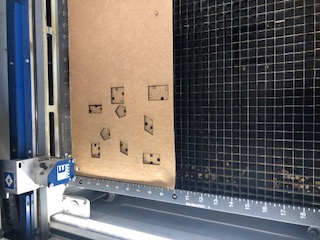 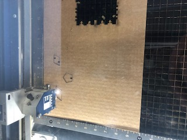 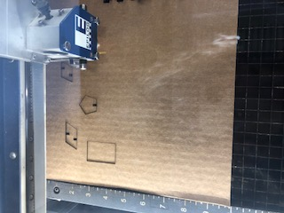 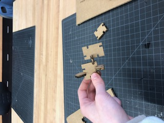 Press Fit KitIn creating my press fit kit, I used Corel Draw. I inserted 3 different shapes and made indents in them so that they would fit together. Next, I loaded the cdr file onto a flash drive and walked it out to the Epilog Laser Engraver. I put the cardboard in and adjusted the cutting preferences. My first cut's indents were too big. I forgot that I needed to make them smaller because the laser gets rid of a slight bit more than what you want. I then went back and made the indents smaller. I recut and they fit together perfectly!
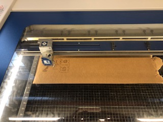 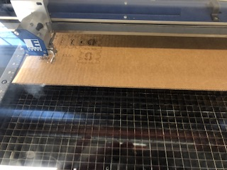 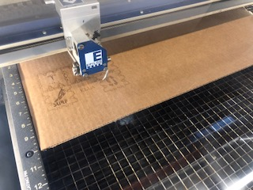 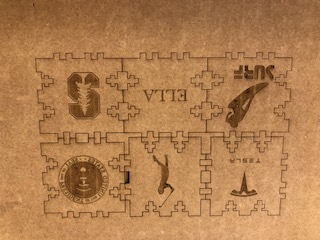 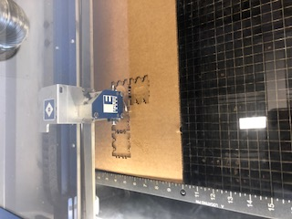 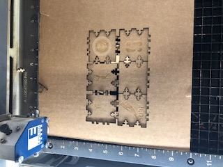 Cork CoasterTo make my JFK coaster, I first downloaded a picture of JFK. Then, I simply put in into Corel Draw, sized it, then put the file on a flashdrive. I walked over to the laser engraver, put a blank cork coaster in it, and pressed start. 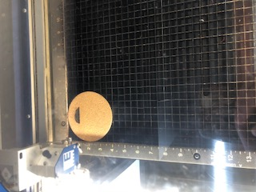 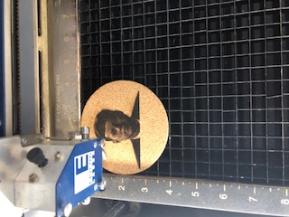 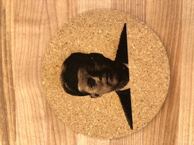 Water Bottle
I used Corel Draw to make my water bottle. First, I downloaded pictures of some of my favorite sharks (Bull, Great White, Goblin, Cookie Cutter, Great Hammerhead, and Lemmon), put them into Corel Draw, then wrote my name below them. I loaded the CDR onto a flash drive and put a water bottle into the laser ingraver and pressed start. Home